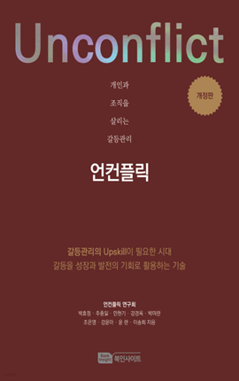

학습 목표
- 1. 갈등을 적절히 관리함으로 시간과 에너지 낭비를 줄여 업무 성과와 효율성이 향상될 수 있다.
- 2. 효과적인 갈등 해결 방식을 통해 조직 간의 신뢰를 쌓고 협업의 질을 높여 원만한 커뮤니케이션을 기대할 수 있다.
교육 특징
-
1. 전문가의 실제 에피소드를 바탕으로 이론과 노하우 전달
갈등관리 분야의 전문가의 실제 경험을 바탕으로 생생한 사례와 예시로 흥미를 더하고 깊이 있는 지식과 노하우를 쉽게 이해할 수 있도록 구성한 강의
-
2. 딱딱한 이론을 다양한 사례로 저절로 학습되는 스토리텔링 강의
실무에서 마주칠 수 있는 다양한 시나리오를 반영하여, 왜 특정 방식으로 코드를 작성하는지에 대한 명확한 이유 제시
-
3. ‘딜레마 Q’와 ‘솔루션 A’ 구성을 통한 학습 효과 증대
학습 전 핵심 질문으로 학습자의 흥미 및 동기를 유발시켜 학습 몰입도를 높이며, 학습 후 같은 질문에 대한 답변을 제공하여 핵심 내용을 되새길 수 있도록 구성
교육 대상
- 1. 직장 리더나 관리자
- 2. 인사 및 조직 담당자
- 3. 갈등 분석과 해결 방법에 관심있는 사람
강의 목차
- 제1장 갈등 없이 갈등 만나기
- 제2장 갈등 확산을 막는 감정관리
- 제3장 욕구를 읽어야 갈등이 보인다
- 제4장 갈등관리 습관 1
- 제5장 갈등관리 습관 2
- 제6장 갈등관리 커뮤니케이션
- 제7장 디지털 시대의 갈등관리
- 제8장 갈등을 줄이는 존중하는 조직 문화
강사 소개
강사명
민현기
경력
前 서울여대 인재개발아카데미 주임교수
現 로젠탈 콘텐츠 랩 대표
북인사이트 브랜드 대표
국가과학인력개발원 초빙교수
現 로젠탈 콘텐츠 랩 대표
북인사이트 브랜드 대표
국가과학인력개발원 초빙교수
참고 도서

도서명
개인과 조직을 살리는 갈등관리 언컨플릭
저자명
민현기
도서소개
갈등은 조직 성장의 자연스러운 에너지입니다. 이 책은 갈등이 없는 이상을 말하는 대신, 조직과 개인이
'갈등을 건강하게 관리하는 역량'을 키워 긍정적인 성장의 기회로 전환해야 함을 역설합니다. '언컨플릭(Unconflict)'은 복잡한 환경에서 불가피한
갈등을 성장의 자원으로 활용하여 개인과 조직을 살리는 실질적인 갈등관리 솔루션을 제시합니다.